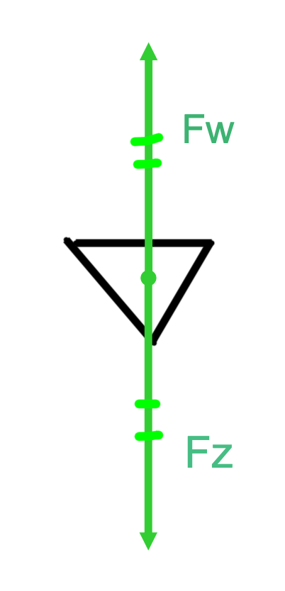

Valsnelheid en luchtweerstand
Je voert een onderzoek uit naar de luchtweerstand. Volgens het lesboek is de luchtweerstand kwadratisch evenredig met de snelheid. Dat betekent dat als de snelheid twee keer zo groot wordt, de luchtweerstand vier keer zo groot wordt.
In dit onderzoek ga je die relatie proberen te bevestigen met videometen. Voor alle aanvullende instructies over verslaglegging en beoordeling verwijs ik naar de algemene verslageninformatie.
Formule uit het lesboek
Fw = k · v2
Fw is de luchtweerstandskracht, k is een constante die afhangt van de vorm en het oppervlak van het vallende voorwerp en v is de snelheid van het voorwerp.
Fz = m · g
Fz is de zwaartekracht op het hoedje, m is de massa van het hoedje in kilogram en g is de gravitatieversnelling (ongeveer 9,81 m/s2 op aarde).
Door enkel de massa aan te passen, pas je de zwaartekracht aan. Hierdoor verandert de valsnelheid. Met videometen meet je de snelheid van het hoedje. Als blijkt dat het hoedje een terminale snelheid heeft, dan is de luchtweerstand gelijk aan de zwaartekracht. Zo kun je de luchtweerstandskracht bepalen.
Ik wil graag dat je de snelheid uitzet tegenover de luchtweerstandskracht. Als de grafiek een parabool is, dan is het verband kwadratisch. Om dat te bevestigen wil ik dat je de snelheid in het kwadraat zet tegenover de luchtweerstandskracht. Als dat een rechte lijn is, dan is het verband kwadratisch. Dit noem je coördinatentransformatie.

Hulp nodig met Tracker?
Bekijk de uitlegvideo waarin ik voordoe hoe je Tracker gebruikt om de valsnelheid van het hoedje te meten. Gebruik de video als naslag zodat je tijdens het practicum sneller kunt starten.
Verslagopzet voor dit onderdeel
Gebruik onderstaande volgorde in je verslag over dit onderwerp. Deze lijst bevat alleen de onderdelen die specifiek bij het luchtweerstandsonderzoek horen; alle algemene eisen en voorbeelden vind je op de pagina met verslageninformatie.
-
Onderzoeksvraag
Formuleer helder: “Wat is het verband tussen de snelheid van het hoedje en de luchtweerstand?”
-
Variabelen
Beschrijf welke grootheden je varieert en meet. De snelheid (of het kwadraat ervan) is de onafhankelijke variabele, de luchtweerstandskracht is de afhankelijke variabele. Noteer ook welke factoren je constant houdt, zoals vorm en oppervlak van het hoedje.
-
Hypothese
Gebruik de theorie uit het lesboek: als het hoedje twee keer zo snel valt, is de luchtweerstand vier keer zo groot. Licht toe waarom je dat verwacht.
-
Methode
Leg uit hoe je meet: je gebruikt videometen met Tracker. Op Chromebook gebruik je de online versie. Op Windows of Mac download en installeer je het programma voor een stabielere verwerking.